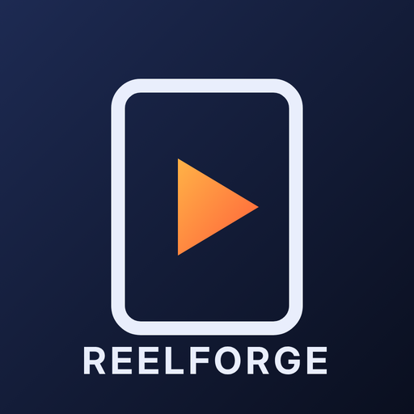
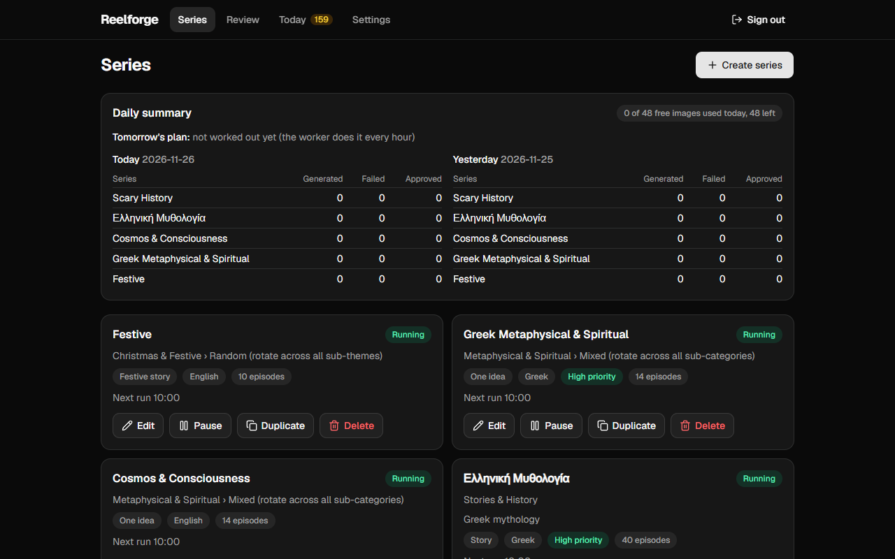
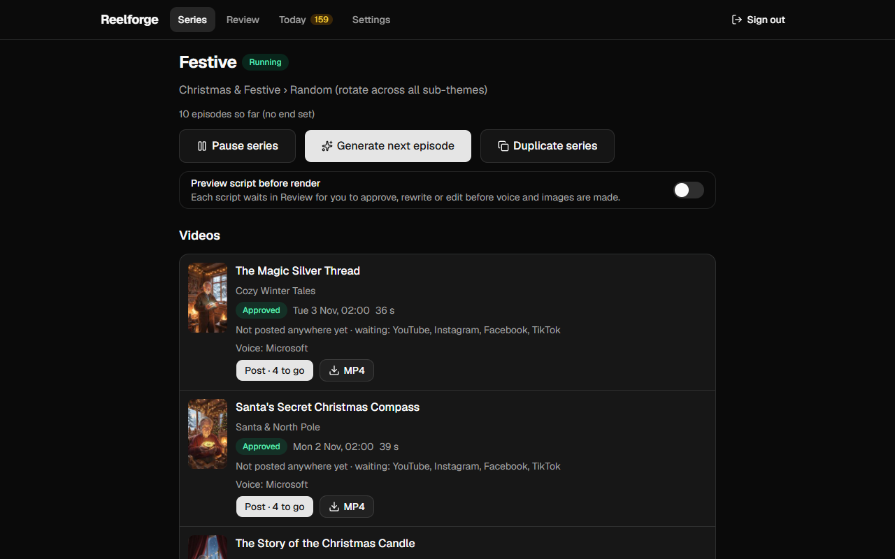
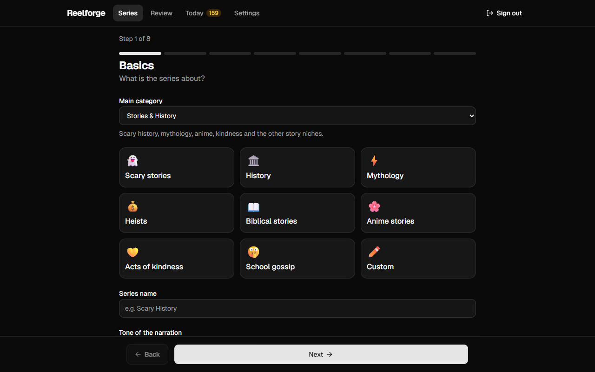
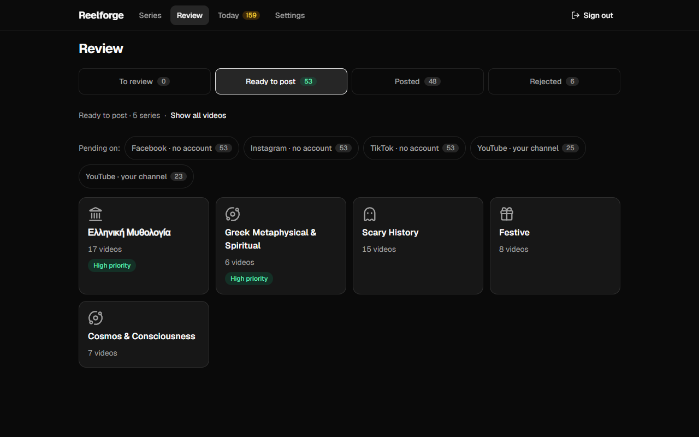
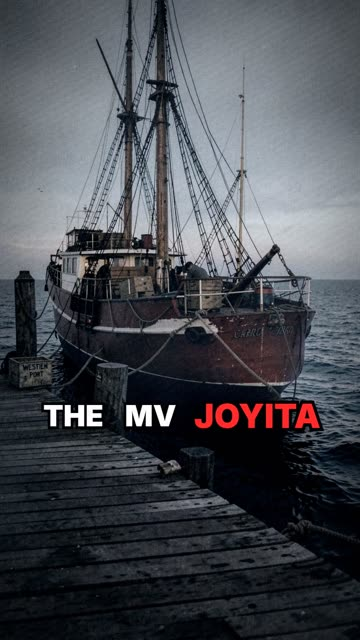

From a series idea to a finished short video, posted where your audience is.
ReelForge writes the script, records an AI voice-over, creates the images, adds word-by-word captions and renders a vertical video. You review it, and ReelForge publishes it to YouTube, Instagram, Facebook Pages, Threads and TikTok.
See how it works All features
What ReelForge does
Faceless short videos (stories, history, mythology, facts) take hours to make by hand. ReelForge does the repetitive parts as one pipeline, and keeps a person in charge of what gets published.
Writes the script
A short script for each episode of a series, in English or Greek, with a hook, a story and an ending, never repeating a topic the series already covered.
Builds the video
Natural AI voice-over, one image per scene with gentle motion, background music and large word-by-word captions, rendered as a 9:16 MP4.
Publishes it
After you approve it, the video goes out on a schedule to the accounts you connected, with a title, caption and hashtags written for each platform.
How it works, in 4 steps
Create a series
Pick a niche, language, voice, art style and how many videos a day.
ReelForge makes the episodes
Script, voice, images, captions and rendering run on their own.
You review
Watch each video, then approve, edit or reject it.
It gets published
At the planned times, to the accounts you connected.
Where it publishes
- YouTube Shorts
- Instagram Reels
- Facebook Pages
- Threads
- TikTok
On TikTok, ReelForge uses TikTok's official Content Posting API to send the video to the creator's TikTok inbox as a draft. The creator opens it in the TikTok app, checks it and posts it themselves.
The dashboard
Real screenshots of the ReelForge dashboard (account names hidden).




Example videos
Stills from videos ReelForge made: history, Greek mythology and stories, in English and Greek.

FAQ
Who is ReelForge for?
Creators who run faceless channels and want to publish regularly without spending hours on every video. Today it is used by its developer for his own channels and is being prepared for more users.
Does ReelForge post without my approval?
Only if you turn on auto-approve for a series. By default every video waits in Review until you approve it.
How does it work with TikTok?
You connect your TikTok account with TikTok's own login. ReelForge then uploads approved videos to your TikTok inbox as drafts; you finish and post them in the TikTok app. You can disconnect at any time.
Which languages are supported?
English and Greek scripts, voices and captions.
What happens to my data?
ReelForge stores only what it needs to post for you (encrypted access tokens and the connected account's basic profile). Nothing is sold or shared. See the Privacy Policy.
How do I get in touch?
E-mail kvesakkas@gmail.com or see the Contact page.